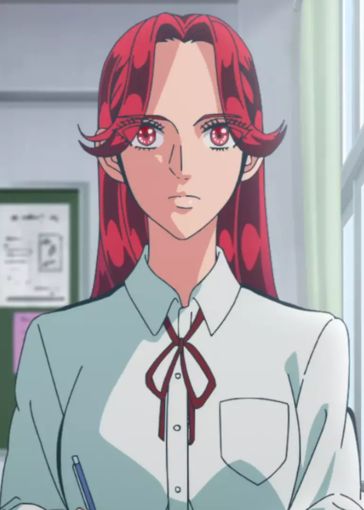
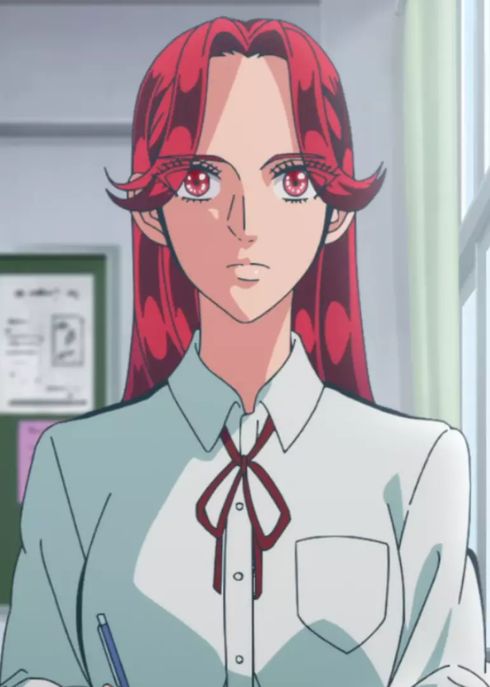

Raise wa Tanin ga I
"Prometido Yakuza: Raise wa Tanin ga Ii" es un manga y anime japonés que sigue la historia de Yoshida, un joven que se compromete con Misaki, la hija de un jefe yakuza. La serie se centra en la vida de Yoshida y Misaki, y cómo se adaptan a su nuevo papel como pareja y a la vida en el mundo del yakuza. La historia comienza con Yoshida, un joven que trabaja en una empresa de tecnología y que no tiene experiencia en el mundo del crimen organizado. Sin embargo, su vida cambia drásticamente cuando conoce a Misaki, la hija de un jefe yakuza, y se compromete con ella. A medida que avanza la historia, Yoshida se ve obligado a adaptarse a la vida en el mundo del yakuza, lo que incluye aprender a navegar las complejas dinámicas de la organización y a lidiar con los peligros que conlleva. Mientras tanto, Misaki es una joven que ha crecido en el mundo del yakuza y que ha sido educada para ser la esposa perfecta de un jefe yakuza. Sin embargo, ella tiene sus propias ideas y aspiraciones, y se siente atrapada en su papel como la hija de un jefe yakuza.
Protagonistas
 
